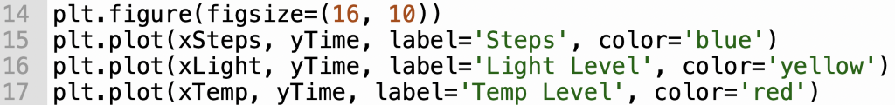
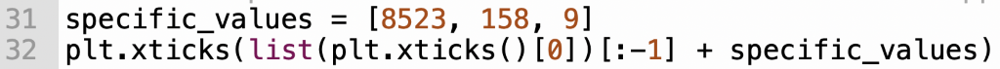

Looked into potential projects and decided the project.
Set a plan for the embedded system.
Week 3
Began the program for my embedded system of choice: Micro: BIT.
Created digital inputs.
Week 4
Created analogue inputs and storing data.
Week 5
Finished the Micro: BIT program.
Week 6
Done unit testing on the Micro: BIT.
Converted data to a csv file.
Chose IDE Thonny and programming language Python.
Began programming.
Read the csv file.
Completed BR3.
Week 7
Extracted data from csv file to find out the mean, median, mode
and max values.
Week 8
Began creating 'what if' questions.
Extracted data from csv file for 'what if' questions.
Completed first 'what if' question.
Week 9
Began second 'what if' question.
Completed second 'what if' question.
Began to work on visualising csv data.
Created graph using matplotlib to visualise the data.
Week 10
Conducted unit testing for Python program.
Ensured program runs and fixed any errors.
Week 11
Focused on meeting the brief.
Finalised conducting all unit testing.
Week 12
Initiated writing of evaluation stage.
Reflected upon initial design and final design.
Compared errors from beginning to end of project.
Done critical assessment of project's strengths and areas for
improvement.
Began recording video for meeting the brief stage.
BR 1
Create Stage for Micro: BIT
I began working on the Micro: BIT, I chose to create a step tracker.
V1
I did not like this initial design as one problem I had was the steps
would be only logged with the value of 1 each time.
V2
I wanted to implement more analogue inputs so I added light level and
temperature inputs to the Micro: BIT. I also changed the logging
process for the accelerometer to the variable steps so it would log
the data and add the next value to the previous one.
Also added to delete previous data log, so when the end-user can
delete the previous log for their next walk and added button A+B to
play a melody.
BR 2
V3 Final Version
Decided to add logging to true/false. On start logging is set to false
and when the user is ready for their walk they can press button A so
the Micro: BIT can start logging. Once the user is done with their
walk, they would press button B to set logging to false, so that the
Micro: BIT wouldn't log any useless data.
Python Program
My IDE of choice was Thonny and my programming language of choice
was Python.
After I got my data from the Micro: BIT, I extracted it to a csv file.
I imported two libraries pandas as pd and matplotlib.pyplot as plt.
BR 3
For my BR 3 I found the average, median, mode and max values for my data
of: steps, temperature, light and time divided by 72 to convert it into
minutes. These values were used to help with calculate certain
information and analyse my data. At the start I tried finding the mean
of my steps but I was getting the value 4297.633802816901 when I was
supposed to be getting 120 but I figured out the problem and fixed it by
diving the last value of steps by the last value of time.
AR 1/2
First 'what if' question - What if the user walks less or more than
their daily goal? Three parameters which consists of the user's name
(string), steps (integer) and time (float). Before I began with my
function I had to do some calculations for the 'what if' question, I
calculated, if the steps and time were below the average and if the
steps and time were above the average. I hard coded the average steps to
7500 and the next best range of steps to 10000 and time to 69, all of
that was based on my research online.
Second 'what if' question. - What if the temperature and light level
affects the user's average steps per minute Three parameters which
consists of the average steps per minute (float), the temperature
(integer) and light level (integer). I hard coded the average steps a
person takes is found to be around 100, and the best temperature to
outside is at above 15° and daytime was the best light level to go
outside in.
AR 3
For my AR 3 I created a line graph for my data that was extracted from
the csv file.

Then I wanted to the graph to go in intervals of 500 and for each data
value I wanted to have a specific value for each one that shows that max
value reached for each data value, e.g. Steps max value was 8523 So I
done some research and found out about xticks and xlim for my graph.

ID
Description
Test data
Expected Values
Actual result
Passed Y or N
1
To record steps taken when user takes a step and log data